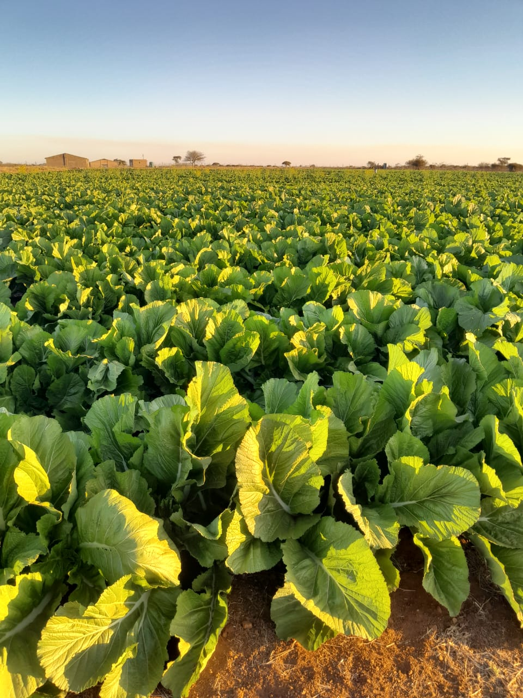

Care for every crop
Giving growing crops attention from the first stages through to harvest.

THE GREENFIELDS STORY OUR FARM, OUR PURPOSE
Meet the farm behind the fresh produce. Real fields, real crops, and a closer look at the work that brings each harvest to life.

01 — WHO WE ARE
Good produce starts long before harvest.
GreenFields Farming Company is centred on growing crops and caring for them throughout the farming cycle. From preparing the land and planting to tending crops and harvesting, each stage deserves attention.
Our photographs give you a genuine look at the fields and produce. We want customers to know what we grow and see the work behind it.
Discover our produce ↗02 — WHAT MATTERS TO US
Three principles that describe how we aim to work, grow and connect with customers.
Giving growing crops attention from the first stages through to harvest.
Recognising that good farming begins with careful work in the fields.
Helping customers explore the produce and enquire about current availability.

03 — BEHIND THE HARVEST
Farming is a cycle of preparation, growth and hands-on work. Explore what happens between planting a crop and preparing it for customers.
See our farming journey ↗04 — FROM FIELD TO PRODUCE
Our farming journey, shown as a simple four-stage process.
Get the land ready for a new growing cycle.
Establish crops and begin the growing process.
Watch the fields and tend to developing crops.
Collect produce when it is ready.
05 — A LOOK AT WHAT WE GROW
Crop availability depends on the growing and harvesting cycle. Contact us to enquire about current supply.
LET'S TALK FRESH PRODUCE
Tell us which crops you need and we'll help you take the next step.